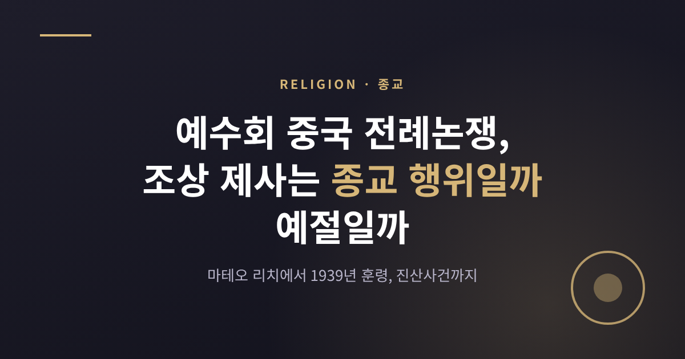
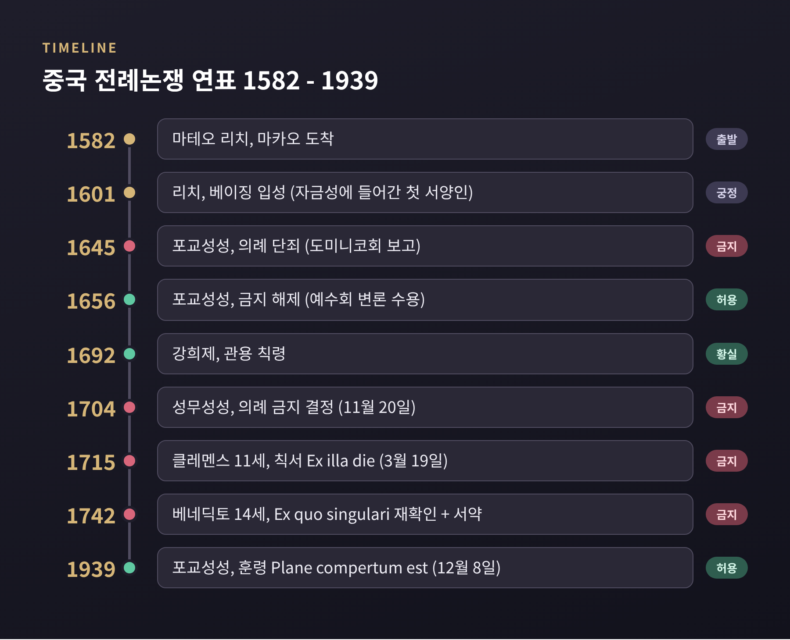
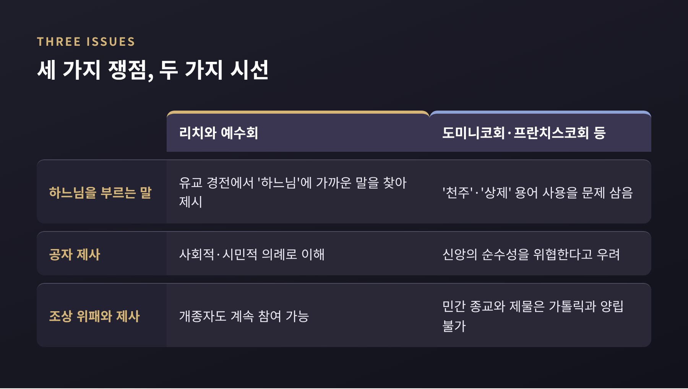
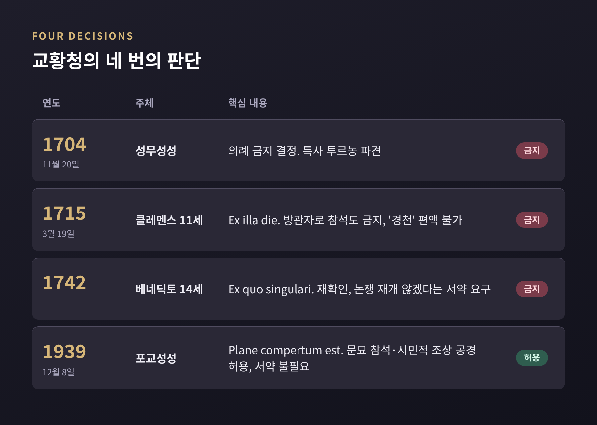
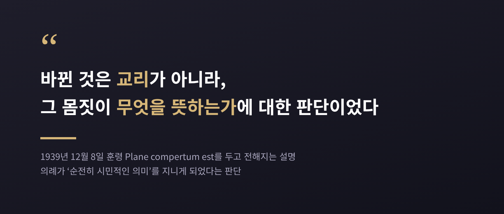
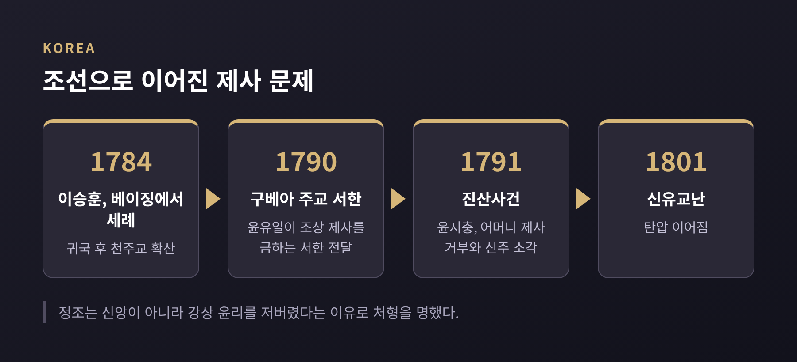

오늘은 예수회의 중국 선교와 전례논쟁에 대해 이야기해 보려 합니다. 핵심 질문은 하나입니다. 조상 제사와 공자 공경은 종교 행위인가, 사회적 예절인가.
마테오 리치는 예절에 가깝다고 보았고, 도미니코회와 프란치스코회 등은 종교적 요소가 있다고 보았습니다. 로마는 1704년, 1715년, 1742년에 금지를 거듭했고, 1939년에 입장을 바꾸었습니다. 이 논쟁은 한국 천주교의 초기 제사 문제, 곧 1791년 진산사건으로도 이어집니다. 어느 쪽이 옳은가를 가리기보다, 각 입장이 무엇을 근거로 삼았는지 살펴보겠습니다.
마테오 리치는 1552년 이탈리아 마체라타에서 태어났습니다. 1582년 8월 마카오에 도착했고, 이듬해 자오칭에 자리를 잡았습니다. 1601년에는 베이징에 들어가 자금성에 발을 디딘 첫 서양인이 되었습니다. 다만 만력제를 직접 만나지는 못했습니다.
처음에 그는 불교 승려의 옷을 입었습니다. 그러다 유학자, 곧 사대부의 비단 예복으로 바꾸었습니다. 중국 사회에서 존중받는 계층의 모습으로 다가가겠다는 선택이었습니다.
리치는 유교 경전을 공부했습니다. 경전 속에서 '하느님'에 가까운 말을 찾아 제시했고, 기독교를 중국인 고유의 신앙을 완성하는 가르침으로 설명했습니다. 1602년에는 한자로 된 세계지도 「곤여만국전도」를 만들었고, 서광계와 함께 유클리드의 『기하원본』을 중국어로 옮겼습니다. 『천주실의』는 유교와 기독교가 서로 대립하지 않는다고 논증한 책입니다.
이런 방식을 흔히 적응주의라고 부릅니다. 상대의 문화 안으로 들어가 그 언어로 말하는 선교 방식입니다. 예수회는 황실 관상대인 흠천감을 맡아 천문학과 역학으로 유교 엘리트에게 신뢰를 쌓았습니다.

리치는 중국의 의례를 종교적이기보다 사회적인 것으로 보았습니다. 그렇다면 개종한 신자가 계속 참여해도 무방하다는 논리였습니다. 예수회는 조상, 황제, 공자에 대한 의례를 시민적 의례로 설명했습니다.
반대편에는 도미니코회, 프란치스코회, 아우구스티노회가 있었습니다. 이들은 현지 적응에 반대했고, 다른 지역과 같이 처음부터 새로 시작하는 방식을 원했습니다. 이들이 로마에 제기한 쟁점은 크게 세 가지였습니다.
첫째, 하느님을 가리키는 중국어 용어입니다. '천주'와 '상제' 같은 말을 써도 되는가의 문제였습니다. 둘째, 공자에게 올리는 제사입니다. 셋째, 조상의 위패와 제사입니다.
도미니코회의 후안 바우티스타 데 모랄레스는 1633년 푸젠에 들어갔고, 1643년 로마로 파견되었습니다. 그는 예수회가 개종자를 얻으려고 공자와 조상 숭배를 어느 정도 용인한다고 보았습니다. 신앙의 순수성이 흔들린다는 우려였습니다.
두 입장 모두 나름의 진지한 근거를 갖고 있었습니다. 한쪽은 문화를 존중해야 복음이 뿌리내린다고 보았고, 다른 쪽은 경계를 흐리면 신앙 자체가 변질된다고 보았습니다.

로마의 결정은 처음부터 일관되지 않았습니다. 1645년에 포교성성은 도미니코회 쪽 보고를 따라 의례를 단죄했습니다. 그러나 1656년에는 예수회의 변론을 듣고 금지를 풀었고, 중국 관습에 우호적인 관행을 받아들였습니다. 1669년에는 성무성성이 두 결정이 모두 유효하다고 밝혔습니다. 다만 자료에 따라 1645년 결정의 주체를 교황 인노첸시오 10세로 적기도 합니다.
한편 중국 황실의 태도도 중요했습니다. 1661년부터 1722년까지 재위한 강희제는 예수회를 신뢰했습니다. 1692년에는 관용 칙령을 내려 가톨릭을 인정하고 교회를 공격하지 못하게 했으며, 중국인의 신앙 실천을 합법화했습니다. 또 한 오래된 자료는 1700년에 강희제가 공자와 조상 의례를 숭배가 아닌 시민적 의례라고 밝혔다고 전하는데, 다른 자료에서는 확인되지 않아 단정하기는 어렵습니다.
1704년 11월 20일 성무성성은 의례를 금지하는 결정을 내렸습니다. 교황 클레멘스 11세는 특사 샤를 토마 마이야르 드 투르농을 보냈습니다. 투르농은 1705년 12월 베이징에 도착했습니다. 강희제는 처음에 호의적이었지만, 의례를 없애려는 목적임을 알고 태도를 바꾸었습니다. 선교사들에게 의례를 지키겠다는 허가증을 받으라고 요구했고, 거부하면 추방하겠다고 했습니다.
1707년 1월 투르농은 난징에서 선교사들에게 의례 폐지를 명했고, 어기면 자동으로 파문된다고 선언했습니다. 이후 그는 마카오에 갇혔고, 1710년 6월 8일 그곳에서 숨졌습니다. 이 처우를 가톨릭 백과사전은 구금으로, 위키피디아는 추방으로 적고 있어 기록이 갈립니다.

1715년 3월 19일 클레멘스 11세는 칙서 「그날 이후」(Ex illa die)를 내렸습니다. 내용은 구체적이었습니다.
이에 강희제는 선교를 금지했습니다. 이 시점은 자료마다 다릅니다. 위키피디아의 강희제 항목은 1715년 칙서에 대한 응답으로 적고, 중국 전례논쟁 항목은 1721년으로 적습니다. 1724년에는 옹정제가 천주교를 금하며 박해가 강해졌습니다.
1742년 베네딕토 14세는 「Ex quo singulari」로 1715년의 결정을 다시 확인했습니다. 선교사에게는 이 논쟁을 다시 꺼내지 않겠다는 서약도 요구했습니다. 예전에는 토론의 대상이었던 문제가, 이때부터는 말조차 꺼낼 수 없는 문제가 된 셈입니다.
1939년 12월 8일 포교성성은 훈령 「Plane compertum est」를 발표했습니다. 가톨릭 신자가 공자 제례, 곧 문묘나 학교 행사에 참석하는 것을 허용했고, 시민적 방식의 조상 공경도 받아들였습니다. 베네딕토 14세가 요구한 서약은 불필요하다고 선언했습니다.
이유로는 의례가 이제 '순전히 시민적인 의미'를 지니게 되었다는 판단이 제시되었습니다. 교리가 바뀐 것이 아니라 행위가 무엇을 뜻하는지에 대한 판단이 바뀌었다는 설명입니다.

이 대목은 종교학에서 흥미로운 질문을 던집니다. 같은 절을 하는 행위가 어떤 사회에서는 예절이고 어떤 사회에서는 예배일 수 있습니다. 그 의미는 행위자가 어떻게 이해하는지, 공동체가 어떻게 받아들이는지에 따라 달라집니다. 1939년의 훈령은 교회가 시대의 변화 속에서 의례의 의미를 다시 읽었다는 사례로 소개됩니다. 반대로 이를 두고 지나친 타협이라는 시각이나, 처음부터 허용되었어야 했다는 시각도 있을 수 있습니다. 어느 쪽으로 읽느냐는 독자 각자의 몫입니다.
참고로 제2차 바티칸 공의회(1962~65)가 토착 의례를 가능한 범위에서 전례에 받아들이는 것을 지지했다고 브리태니커는 정리합니다.
이 논쟁은 중국에서 멀리 떨어진 조선에도 닿았습니다. 1784년 이승훈이 베이징에서 세례를 받고 돌아오면서 천주교가 퍼졌습니다. 1790년에는 윤유일이 베이징의 구베아 주교로부터 조상 제사를 금하는 사목 서한을 받아 조선에 전했습니다. 교황청이 1742년에 이미 유교식 제사를 금지해 두었던 터였습니다.
1791년 전라도 진산에서 윤지충이 어머니의 상을 당했습니다. 그는 제사를 지내지 않고 신주를 불태웠습니다. 권상연도 신주를 태웠다고 자백했습니다. 두 사람의 관계는 한국민족문화대백과가 외종형으로, 우리역사넷이 외제(外弟)로 적어 자료마다 다릅니다.
정조는 처형을 명하면서 신앙 때문이 아니라 강상 윤리, 곧 사람의 도리를 저버렸기 때문이라고 밝혔습니다. 진산군은 5년간 현으로 강등되었고, 군수는 파직되어 귀양을 갔으며, 서학서는 불태워졌습니다. 한 연구는 정조가 이 사건을 온건하게 다루려 했으나 효를 무엇보다 앞에 두었기에 끝내 용서할 수 없었고, 정치적으로는 남인을 공격하는 데 쓰였다고 설명합니다.
천주교 쪽 논리는 이렇습니다. 영혼은 죽은 뒤 천당이나 지옥으로 가므로 후손의 제사를 받으러 돌아오지 않으며, 제사를 마귀가 흠향하는 우상숭배로 간주했습니다. 유학자들의 반응은 한결같지 않았습니다. 안정복은 귀신이 죽으면 흩어진다고 보면서도, 성인이 제사를 제정한 근거 때문에 귀신의 실재를 완전히 부정하지 못하는 딜레마에 놓였습니다. 정종로는 제사를 산 사람을 위로하는 정서적 장치로 풀이했습니다.

윤지충과 권상연은 조선 천주교회의 첫 순교자로 기억됩니다. 이후 양반 신자들이 교회를 떠나면서 중인 이하 신자들이 중심이 되었다고 합니다. 1801년에는 신유교난이 일어났습니다. 다만 1939년 이후 한국 교회의 제사 입장이 어떻게 달라졌는지는 이번에 확인한 자료에서 다루지 않아, 이 글에서는 말씀드리지 않습니다.
중국 전례논쟁은 하나의 행위에 두 가지 이름이 붙을 수 있다는 점을 보여 줍니다. 예절이라 부르면 허용의 근거가 되고, 종교라 부르면 금지의 근거가 됩니다. 리치와 예수회는 문화를 존중해 복음을 전하려 했고, 반대편은 신앙의 경계를 지키려 했습니다. 로마의 판단은 1645년에 막히고 1656년에 열렸으며, 1704년과 1715년, 1742년에 닫혔다가 1939년에 다시 열렸습니다.
마지막으로 한 가지만 덧붙이겠습니다. 이 논쟁에서 승자와 패자를 가리는 일은 쉽지 않습니다. 중요한 것은 같은 몸짓을 서로 다르게 읽은 사람들이 있었고, 그 해석의 차이가 황제의 칙령과 사람의 목숨까지 움직였다는 사실입니다.
"그 절은 예절인가, 예배인가" — 이 질문은 지금도 문화가 만나는 자리마다 다시 던져집니다. 당신이라면 한 사람의 의례를 어떤 이름으로 부르시겠습니까.